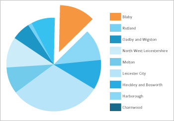
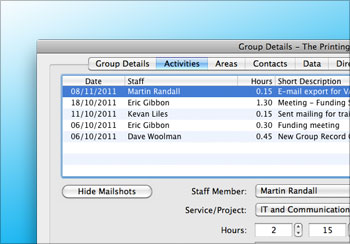

Easy to use information at your fingertips
Understand
VCS Tracker makes it easy to collect data and to produce reports that allow you to get a true understanding of what is happening to your local voluntary and community sector.
With VCS Tracker’s reporting features you can gain new insights into:
- groups delivering specific services
- beneficiaries
- group activity in specific regions
- income distribution
- your staff’s activities across a wide area.
You can even export your data for use online or in printed directories.
See what's happening in your sector
VCS Tracker makes it easier than ever to understand what's going on right now in your sector.

Connect
VCS Tracker allows to you to manage your communications more efficiently - saving you time and money.
- Reach everybody - the database will automatically print letters and produce labels for anyone without an email address.
- Flexible mailing - mail can be sent using industry standard systems such as MailChimp and still be recorded.
- Track your communications - all communications with groups are recorded and can be analysed and viewed at will.
- Record activities - with groups, statutory bodies and other organisations.
See your impact
Keep track of all your contact with groups and then report on your progress.

Evidence
Flexible reporting allows the easy and quick creation of reports. These can be saved for future use, either by the creator or the whole organisation.
- Produce detailed activity reports for funders
- Analyse the shape of the sector, size of client groups
- Analyse group income over time
- Provide evidence using customisable categorisation
- Record evidence for support and analysis
- Easily produce quarterly activity reports for funders
Want to know more?
Call us now on 0116 257 5049 or send us an email using our contact form.
How does VCS Tracker help with reporting?
Download How does VCS Tracker help with reporting? (PDF 397k) to see what VCS Tracker's reporting features can do for your organisation.